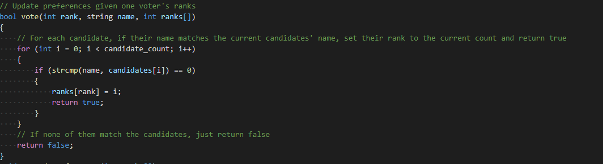
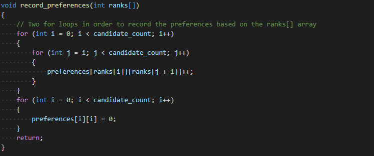
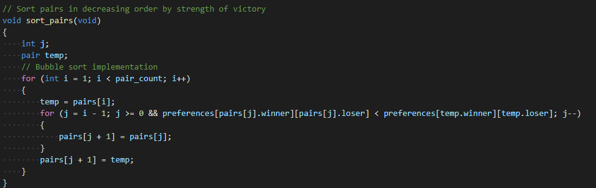
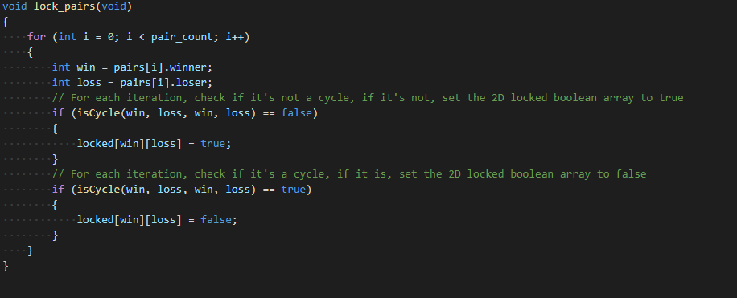
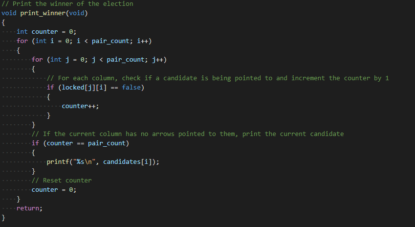
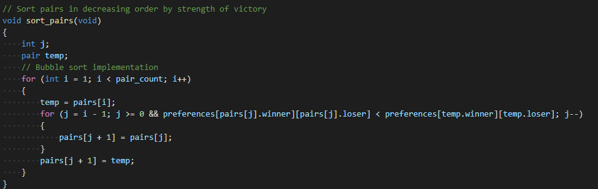
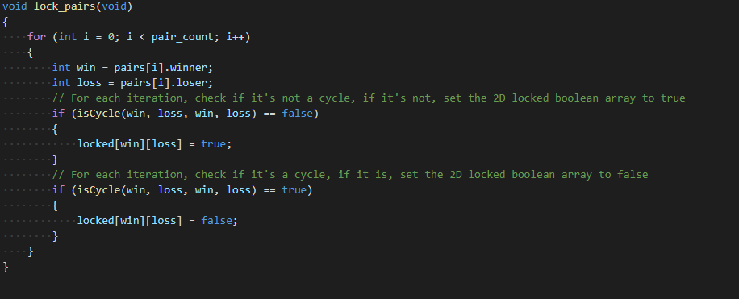
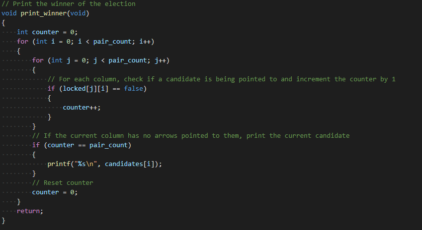

This is the documentation and download link to my tideman project in C
Documentation
This project is one of my CS50 favorites, its full explanation is here
This is an example of a ranked pairs voting system in order to make an election system called tideman
It has around 220 lines in total, and it's a process of making 6 functions, and they are vote, record_preferences, add_pairs, sort_pairs, lock_pairs, and print_winner


 





Download link
Here is the download link